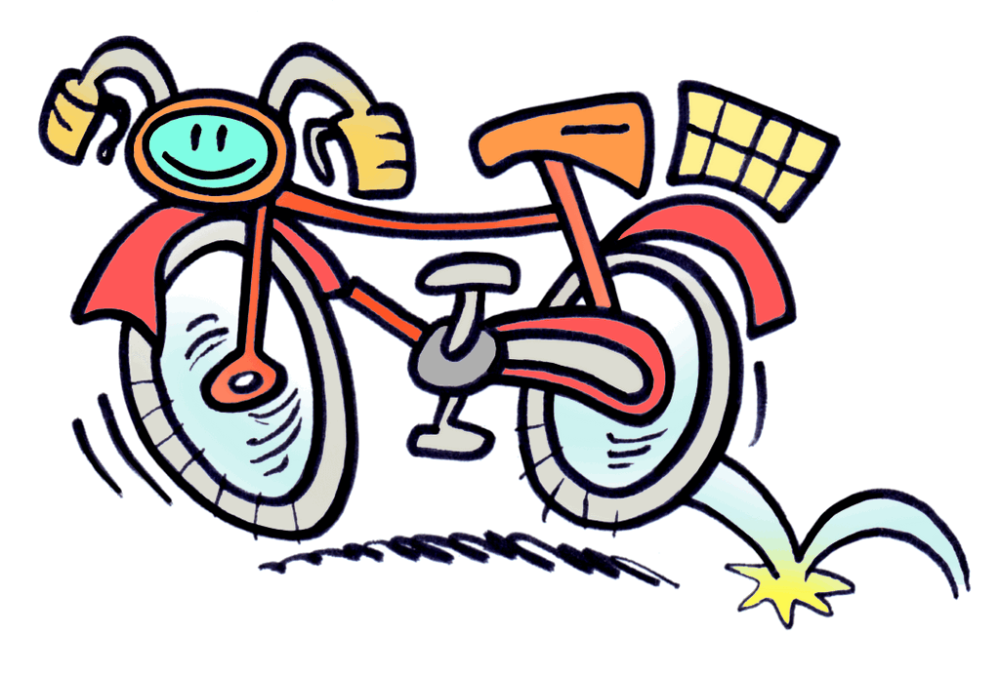
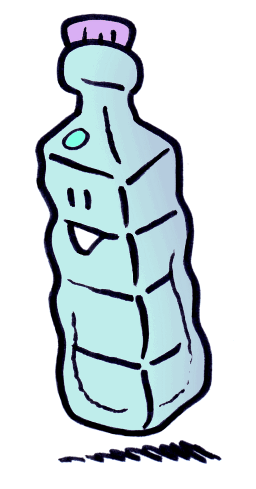
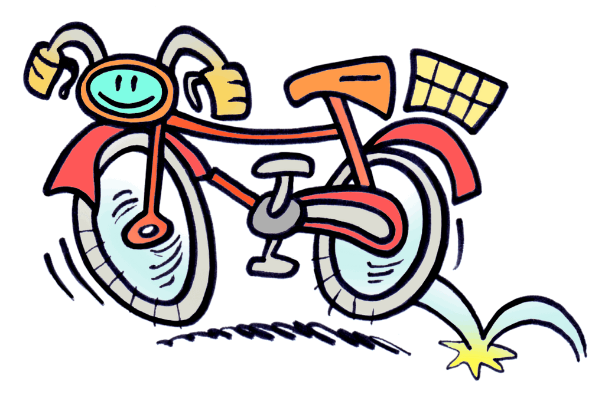
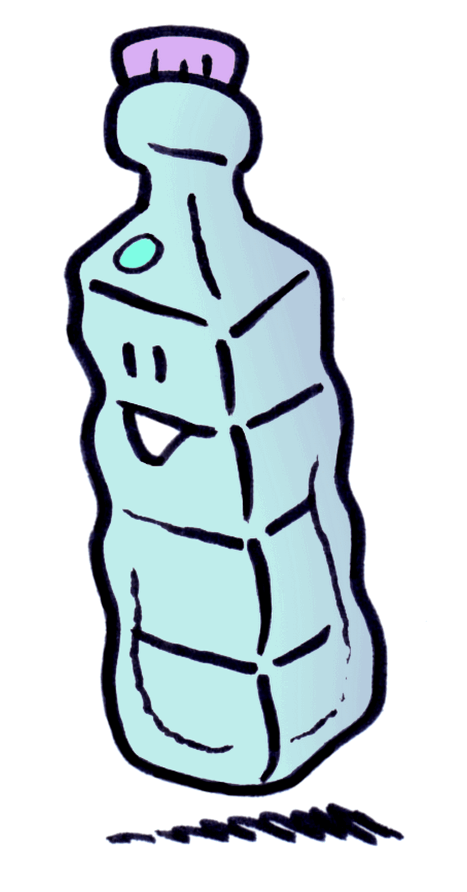
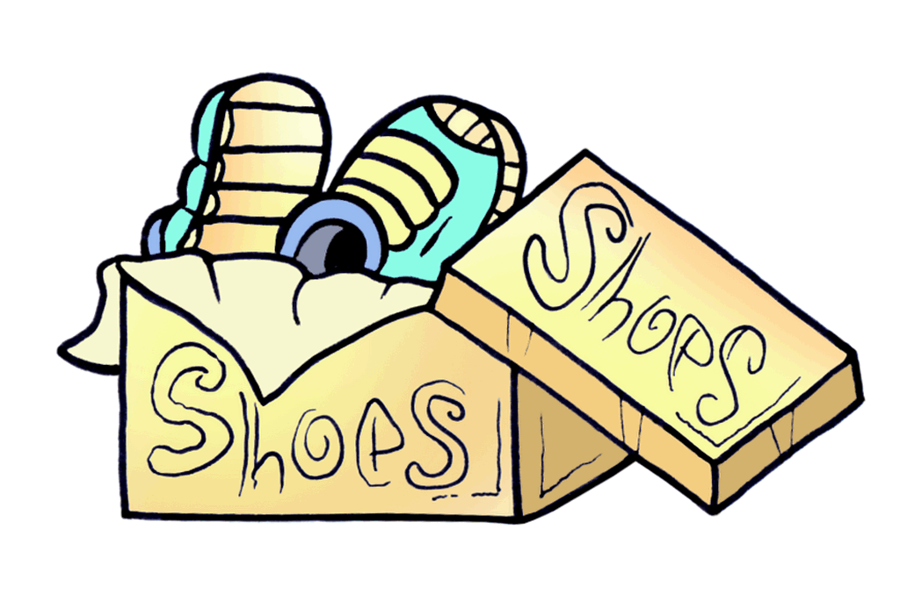
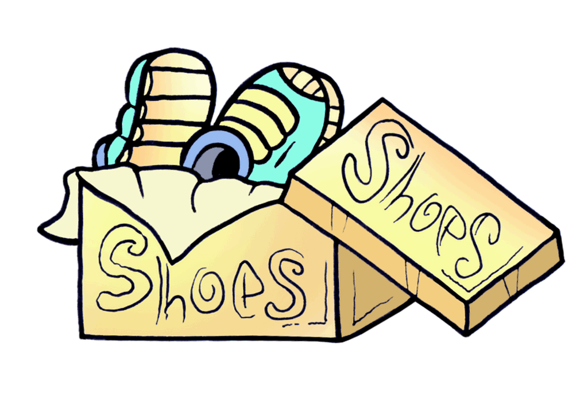

 

Una lattina di bibita, un giornale e una bottiglia di plastica, per decomporsi, se non vengono riciclati, ci mettono tanto tempo: da 4 a 12 mesi, da 20 a 100 anni, da 100 a 1000 anni, ma non in questo ordine. Prova a individuare correttamente, per ciascuna tipologia di rifiuto, il tempo di decomposizione.
Quante lattine occorrono per ottenere una bicicletta? Quante bottiglie in plastica per confezionare una felpa di pile? E infine, quante scatole di scarpe sono necessarie per ottenere una cartellina portadocumenti in cartoncino?
Anche qui i numeri li hai, prova a fare i giusti accoppiamenti...